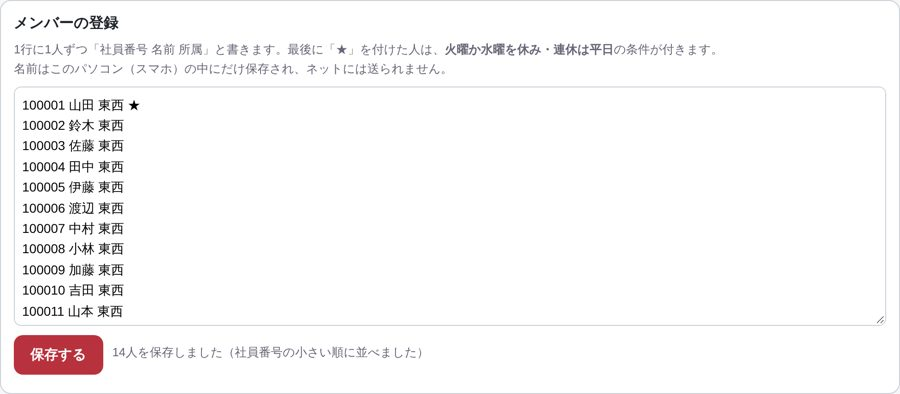
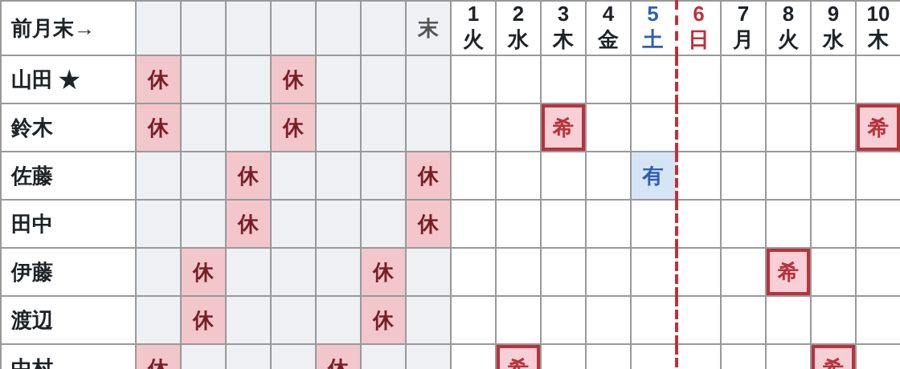
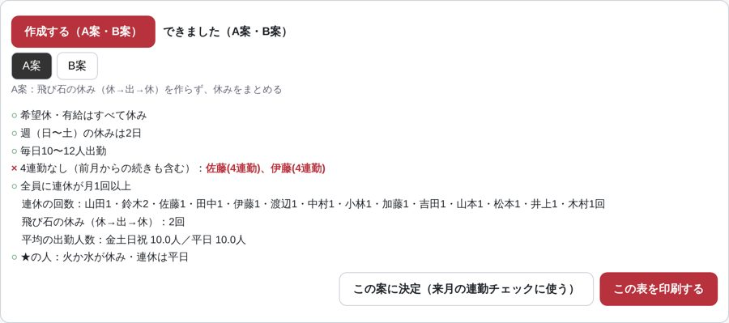
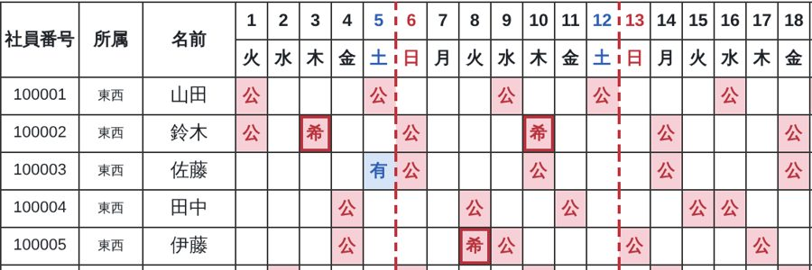

シフト自動作成ツールの使い方
ブラウザで開くだけ。AIも課金も不要です。WindowsのパソコンでもiPhoneでも使えます。
https://shige914marujyu2-afk.github.io/print-pages/shift/
https://shige914marujyu2-afk.github.io/print-pages/shift/
スマホで
読み取ると
開きます
読み取ると
開きます

1
条件と回送員を登録する最初の1回だけ

- 「① 条件・メンバー」を押す
- 会社の条件（出勤人数・週の休み・連勤・連休・3連休）を数字で入れる。GW・お盆・年末年始は「長い休み」に何日〜何日で入れる
- 「＋ 回送員を追加」で1人ずつ入れる。やめた人は行の「削除」
- 個人の条件：曜日ボタン＝毎週そのどれかを休み、チェック＝連休は平日だけ
- 入力はすぐ保存され、社員番号の小さい順に並びます
2
休みを入力する毎月

- 「② 休みの入力」で作る月を選ぶ
- 一番上の日付をタップ：1回目「祝」（祝日＝忙しい日）→ 2回目「全」（全体休＝全員の休み）→ 3回目 元に戻る。祝日は最初から入っています
- マスをタップ：1回目 休 → 2回目 希 → 3回目 有 → 4回目 空白
- 左の灰色7列は前月の最後の1週間。休んだ日を同じようにタップ（月またぎの連勤チェック用）
- 全体休が入った週は、その週の休みを何日にするか（全体休を含めた日数）を入れる
3
作成して印刷する10〜30秒


- 「③ 作成・印刷」で「作成する（A案・B案）」を押す
- 「A案」＝飛び石の休みなし、「B案」＝金土日祝の出勤を多め。押して見比べる
- ルールを守れたかが ○／× で出る。×の所は名前と日付が赤で出ます
- 使う案を開いて「この表を印刷する」
- 「この案に決定」を押しておくと、翌月の前月末7列が自動で入ります
自動で守るルール（上ほど優先）
① 希望休・有給は必ず休み
④ 4連勤以上にしない（月またぎも）。5連勤は絶対に作らない
② 日曜〜土曜の1週間に休み2日
⑤ 連休は月1回以上。2回目や全体休を使った3連休は、回数の少ない人から
③ 毎日10人以上。月〜木は11人まで、金土日祝は11〜12人を目標
⑥ 個人の条件（毎週休む曜日・連休は平日だけ）
困ったときは
- ×が消えないとき：もう一度「作成する」を押すと別の組み合わせが出ます。それでも×なら、希望休の重なりなどでどうしても守れない月です。×の所だけ手で直してください。
- 希望休の紙：「④ 希望休の表」を開いて「この表を印刷する」。登録した名前と、その月の祝日・全体休が入ります。
- 表の色：公休み 希希望休 有有給 全全体休 赤い点線＝週の区切り（日〜土）
- データの保存先：名前や入力は使っているパソコン・スマホの中だけに残り、ネットには送られません。別の機械で使うときは、①のメンバー登録からやり直してください。